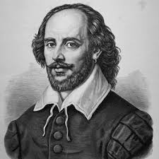

ANY BOOK YOU WANT JUST ASK US.
-

William Shakespeare
William Shakespeare (bapt. 26 April 1564 – 23 April 1616)[a] was an English playwright, poet, and actor, widely regarded as the greatest writer in the English language and the world's greatest dramatist.
-
 Ernest Hemingway
Ernest Hemingway
Ernest Miller Hemingway (July 21, 1899 – July 2, 1961) was an American novelist, short-story writer, journalist, and sportsman.
-
 Dostoevsky
Dostoevsky
Dostoyevsky, was a Russian novelist, philosopher, short story writer, essayist, and journalist.
-
 Charles Dickens
Charles Dickens
Charles John Huffam Dickens 7 February 1812 – 9 June 1870) was an English writer and social critic. He created some of the world's best-known fictional characters and is regarded by many as the greatest novelist of the Victorian era.
FEED YOUR MIND

A growing body of research indicates that reading literally changes your mind. Using MRI scans, researchers have confirmedTrusted Source that reading involves a complex network of circuits and signals in the brain. As your reading ability matures, those networks also get stronger and more sophisticated. In one studyTrusted Source conducted in 2013, researchers used functional MRI scans to measure the effect of reading a novel on the brain. Study participants read the novel “Pompeii” over a period of 9 days. As tension built in the story, more and more areas of the brain lit up with activity. Brain scans showed that throughout the reading period and for days afterward, brain connectivity increased, especially in the somatosensory cortex, the part of the brain that responds to physical sensations like movement and pain.
we are sane shop
We believe in the power of reading, the importance of literacy, and the fact that books should be as inclusive and diverse as readers are. Being Bookish is part of our identity, and it’s one we’re proud to have and share with you.